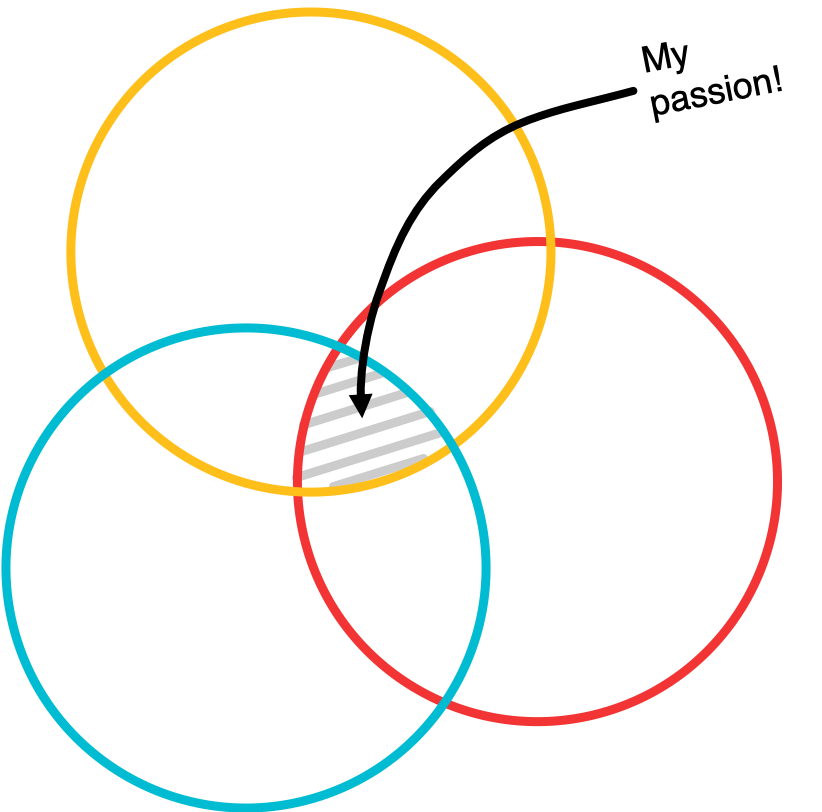

Hey, I'm Jen!
I did my undergrad at NYU Stern where I earned a B.S. in Business with concentrations in marketing and management. While at NYU, I had the opportunity to do multiple internships and study abroad twice. By working alongside people of different backgrounds and meeting people through my travels, I quickly realized just how facinating people are.
After graduating I worked at Nielsen doing market research, where I studied brand effectiveness through TV and digital advertising and advised companies on how to manage their advertising presence. While with the team, I used proprietary software and saw firsthand how complex and important product design and development was. But I also realized that it was critical to have leaders that invision the future of the product and unite multidisciplinary teams to make that vision a reality.
As a result, I decided to go to grad school at the University of Michigan for Human Computer Interaction and User Experience. While there, I completed a number of different design, research, and code-based projects as well as interned at Sonos at a Product Manager. I completed this program in April 2020.
Through all of these experiences, I realized my passion lies at the intersection of business, technology, & design.
I'm currently looking for opportunities where I can combine these three things to create experiences that empower and delight users.
For more on my background, check out my LinkedIn, email me at foran.jlb@gmail.com or take a look at some of my projects below.